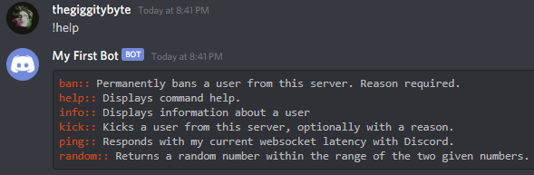

Custom Help Formatter
The built-in help command provided by CommandsNext is generated with a help formatter. This simple mechanism is given a command and its subcommands then returns a formatted help message. If you're not happy with the default help formatter, you're able to write your own and customize the output to your liking.
Simply inherit from @DSharpPlus.CommandsNext.Converters.BaseHelpFormatter and provide an implementation for each of the required methods.
public class CustomHelpFormatter : BaseHelpFormatter
{
// protected DiscordEmbedBuilder _embed;
// protected StringBuilder _strBuilder;
public CustomHelpFormatter(CommandContext ctx) : base(ctx)
{
// _embed = new DiscordEmbedBuilder();
// _strBuilder = new StringBuilder();
// Help formatters do support dependency injection.
// Any required services can be specified by declaring constructor parameters.
// Other required initialization here ...
}
public override BaseHelpFormatter WithCommand(Command command)
{
// _embed.AddField(command.Name, command.Description);
// _strBuilder.AppendLine($"{command.Name} - {command.Description}");
return this;
}
public override BaseHelpFormatter WithSubcommands(IEnumerable<Command> cmds)
{
foreach (var cmd in cmds)
{
// _embed.AddField(cmd.Name, cmd.Description);
// _strBuilder.AppendLine($"{cmd.Name} - {cmd.Description}");
}
return this;
}
public override CommandHelpMessage Build()
{
// return new CommandHelpMessage(embed: _embed);
// return new CommandHelpMessage(content: _strBuilder.ToString());
}
}
Alternatively, if you're only wanting to make a few small tweaks to the default help, you can write a simple help formatter which inherits from @DSharpPlus.CommandsNext.Converters.DefaultHelpFormatter and modify the inherited @DSharpPlus.CommandsNext.Converters.DefaultHelpFormatter.EmbedBuilder property.
public class CustomHelpFormatter : DefaultHelpFormatter
{
public CustomHelpFormatter(CommandContext ctx) : base(ctx) { }
public override CommandHelpMessage Build()
{
EmbedBuilder.Color = DiscordColor.SpringGreen;
return base.Build();
}
}
Your final step is to register your help formatter with CommandsNext.
var discord = new DiscordClient();
var commands = discord.UseCommandsNext();
commands.SetHelpFormatter<CustomHelpFormatter>();
That's all there is to it.
